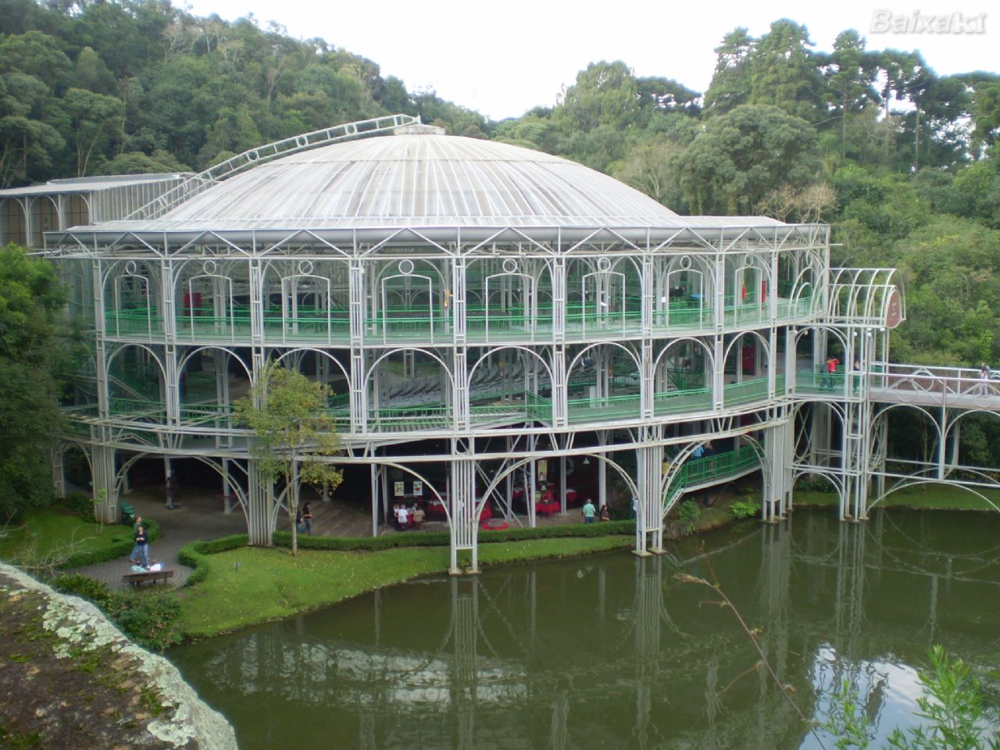
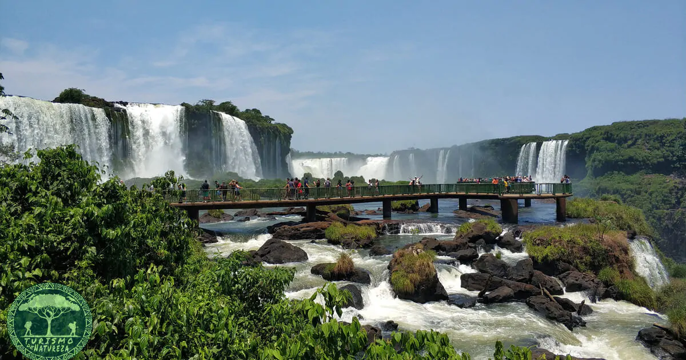

Descubra a Natureza, Cultura e os Melhores Roteiros do Paraná
Explora Paraná nasce com o propósito de mapear e celebrar a diversidade única do nosso estado. Nosso objetivo é ser um guia completo que conecta viajantes, moradores e entusiastas às riquezas naturais e patrimônios históricos espalhados por cada uma de nossas regiões.

"Entre Arte, Tradição e Memória: O Patrimônio Vivo do Paraná"
A história do turismo no Paraná começou a ganhar força no final do século XIX e início do século XX, impulsionada pela inauguração da Ferrovia Paranaguá-Curitiba em 1885 e pela decisiva visita de Alberto Santos Dumont às Cataratas do Iguaçu em 1916 — evento que motivou a criação do Parque Nacional em 1939. Ao longo das décadas, o setor se consolidou com a preservação de patrimônios como o Parque de Vila Velha, a construção de Itaipu Binacional, o planejamento de parques urbanos e a rica herança cultural deixada por povos indígenas, tropeiros e imigrantes europeus e asiáticos, que moldaram a gastronomia, a arquitetura e a identidade acolhedora do estado.

Cataratas do Iguaçu: Força da Natureza e Biodiversidade
As Cataratas do Iguaçu constituem um dos espetáculos naturais mais impressionantes do planeta, localizadas na fronteira entre o Brasil e a Argentina. Formadas pelo Rio Iguaçu, o conjunto conta com centenas de saltos que deságuam em meio à densa vegetação da Mata Atlântica. O ponto mais icônico da visitação é a Garganta do Diabo, uma impressionante queda em formato de "U" com mais de oitenta metros de altura, onde o volume da água cria um névoa constante que gera arco-íris visíveis a partir dos mirantes.

curiosidades
Curiosidade 1
A icônica estufa de vidro do Jardim Botânico de Curitiba foi montada em apenas três meses e suas estruturas metálicas pesam mais de 38 toneladas.
curiosidade 2
A Ópera de Arame, em Curitiba, foi construída em apenas 75 dias sobre o lago de uma antiga pedreira desativada.